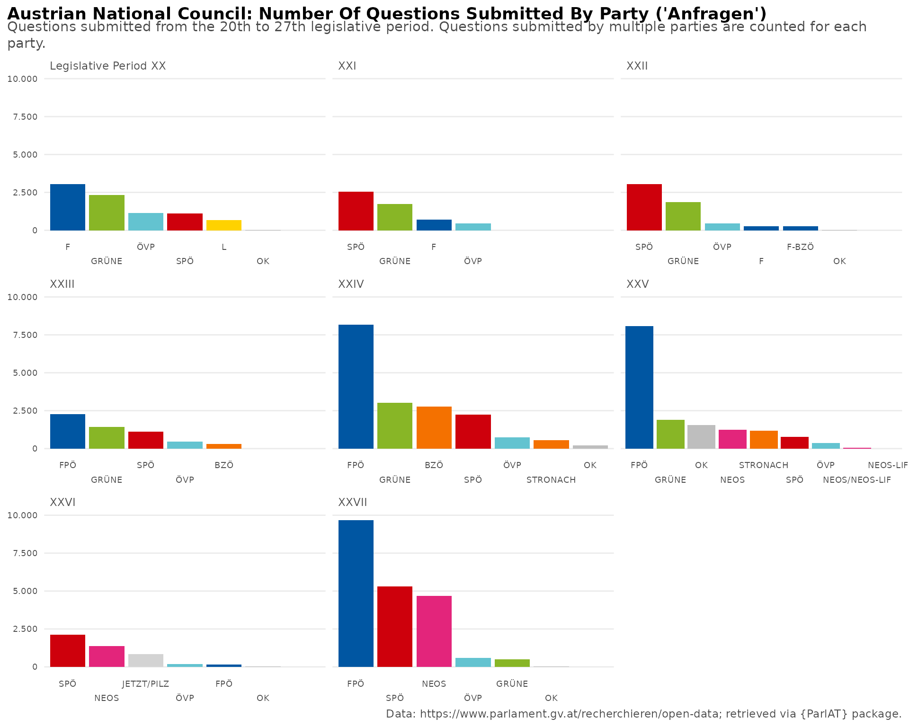
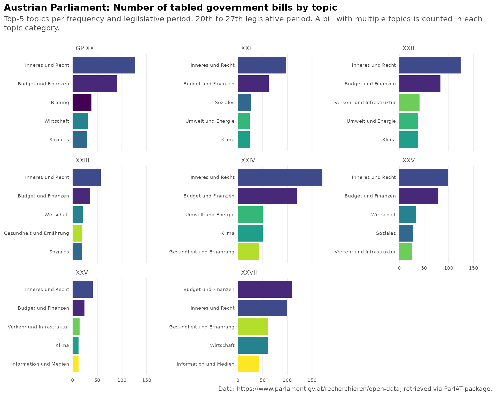
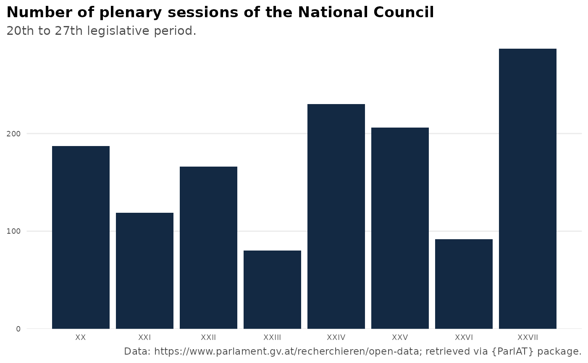

This vignette provides an introduction on how to use the {ParlAT} package to access and subseqently analyze open data provided by the Austrian Parliament. Below are some examples which are meant to give a general overview of the package’s functionality. For details, please consult the reference section.
Get current MPs in the National Council (Nationalrat)
Let’s start with retrieving the compostion of the National Council
(Nationalrat) at the time of writing (16 February 2026). This is done by
the function get_mps_current().
df_current <- get_mps_current(institution = "NR", echo=TRUE)
#> [1] 183
#> {"M":["M"],"W":["W"]}
#> https://www.parlament.gv.at/recherchieren/personen/nationalrat/index.html?WFW_002M=M&WFW_002W=W
#> ⠙ Fetching MPs' names 2/183 | ETA: 2m
#> ⠹ Fetching MPs' names 5/183 | ETA: 2m
#> ⠸ Fetching MPs' names 10/183 | ETA: 2m
#> ⠼ Fetching MPs' names 16/183 | ETA: 2m
#> ⠴ Fetching MPs' names 22/183 | ETA: 1m
#> ⠦ Fetching MPs' names 27/183 | ETA: 1m
#> ⠧ Fetching MPs' names 32/183 | ETA: 1m
#> ⠇ Fetching MPs' names 38/183 | ETA: 1m
#> ⠏ Fetching MPs' names 43/183 | ETA: 1m
#> ⠋ Fetching MPs' names 48/183 | ETA: 1m
#> ⠙ Fetching MPs' names 53/183 | ETA: 1m
#> ⠹ Fetching MPs' names 58/183 | ETA: 1m
#> ⠸ Fetching MPs' names 64/183 | ETA: 1m
#> ⠼ Fetching MPs' names 69/183 | ETA: 1m
#> ⠴ Fetching MPs' names 74/183 | ETA: 1m
#> ⠦ Fetching MPs' names 80/183 | ETA: 1m
#> ⠧ Fetching MPs' names 84/183 | ETA: 1m
#> ⠇ Fetching MPs' names 90/183 | ETA: 1m
#> ⠏ Fetching MPs' names 95/183 | ETA: 1m
#> ⠋ Fetching MPs' names 100/183 | ETA: 47s
#> ⠙ Fetching MPs' names 105/183 | ETA: 44s
#> ⠹ Fetching MPs' names 110/183 | ETA: 42s
#> ⠸ Fetching MPs' names 115/183 | ETA: 39s
#> ⠼ Fetching MPs' names 120/183 | ETA: 36s
#> ⠴ Fetching MPs' names 126/183 | ETA: 32s
#> ⠦ Fetching MPs' names 132/183 | ETA: 29s
#> ⠧ Fetching MPs' names 137/183 | ETA: 26s
#> ⠇ Fetching MPs' names 142/183 | ETA: 23s
#> ⠏ Fetching MPs' names 147/183 | ETA: 21s
#> ⠋ Fetching MPs' names 153/183 | ETA: 17s
#> ⠙ Fetching MPs' names 158/183 | ETA: 14s
#> ⠹ Fetching MPs' names 164/183 | ETA: 11s
#> ⠸ Fetching MPs' names 168/183 | ETA: 9s
#> ⠼ Fetching MPs' names 174/183 | ETA: 5s
#> ⠴ Fetching MPs' names 179/183 | ETA: 2s
#> Fetched 183 MPs' names.
#>
nrow(df_current)
#> [1] 183
df_current %>%
count(party, sort=T)
#> # A tibble: 5 × 2
#> party n
#> <chr> <int>
#> 1 FPÖ 57
#> 2 ÖVP 51
#> 3 SPÖ 41
#> 4 NEOS 18
#> 5 Grüne 16If we want to get the composition of a chamber in the past, the
function get_mps() comes into play. It either returns all
MPs of the requested chamber, who formed part of it in the course of the
entire legislative period (legis_period argument), or at a
specific date (date argument). The latter is a convenient
way to get the composition of the NR at a specifc date.
Note that the legis_period filter is not applicable when
searching MPs of the Federal Council (Bundesrat). This limitation
includes also searches for MPs across all chambers.
#Search for all MPs in the National Council as of 1 January 2025
mps_01012025 <- get_mps(date="01.01.2025", institution="NR")
glimpse(mps_01012025)
#> Rows: 183
#> Columns: 6
#> Groups: pad_intern [183]
#> $ pad_intern <int> 145, 1567, 1937, 1944, 1970, 1971, 1972, 1974, 1975, 1977, 1981, 1986, 1987, 2001, 2122, 2136, 2295, 2309, 2327, 2330, 2332, 2334, 2337, 2339, 2343, 2344, 2345, 2834, 2979, 2996, 2998, 3133, 3155, 3489, 3717, 5065, 5438, 5439, 5486, 5623, 5626, 5627, 5630, 5632, 5634, 5639, 5641, 5643, 5644, 5645, 5646, 5647, 5650, 5653, 5654, 5670, 5672, 5676, 5677, 5678, 5679, 5681, 5683, 5684, 5685, 5687, 6151, 6407, 6485, 6486, 6502, 6506, 8242, 10778, 12741, 14769, 14795, 14835, 14842, 14896, 16218, 16234, 20056, 20445, 22694, 22847, 23167, 23963, 25188, 30645, 30646, 30647, 30648, 30649, 30650, 30653, 30655, 30656, 30657, 30658, 30659, 30660, 30661, 30662, 30663, 30664, 30665, 30666, 30667, 30668, 30669, 30670, 30680, 30681, 30684, 30685, 30688, 30689, 30693, 30694, 30695, 30696, 30697, 30698, 30700, 30701, 30702, 30704, 30705, 30706, 30707, 30708, 30709, 30717, 30719, 30720, 30722, 30723, 30969, 31991, 35468, 35469, 35487, 35497, 35514, 35520, 35521, 35568, 36187, 47187, 51557, 51568, 51570, 51571, 51577, 52727, 55227, 61639, 64022, 65219, 67199, 72999, 78586, 80479, 83101, 83113, 83122, 83124, 83125, 83127, 83129, 83137, 83148, 83150, 83153, 83299, 83409, 84056, 86613, 87001, 87002, 87039, 91141
#> $ legis_period <chr> "XXVIII", "XXVIII", "XXVIII", "XXVIII", "XXVIII", "XXVIII", "XXVIII", "XXVIII", "XXVIII", "XXVIII", "XXVIII", "XXVIII", "XXVIII", "XXVIII", "XXVIII", "XXVIII", "XXVIII", "XXVIII", "XXVIII", "XXVIII", "XXVIII", "XXVIII", "XXVIII", "XXVIII", "XXVIII", "XXVIII", "XXVIII", "XXVIII", "XXVIII", "XXVIII", "XXVIII", "XXVIII", "XXVIII", "XXVIII", "XXVIII", "XXVIII", "XXVIII", "XXVIII", "XXVIII", "XXVIII", "XXVIII", "XXVIII", "XXVIII", "XXVIII", "XXVIII", "XXVIII", "XXVIII", "XXVIII", "XXVIII", "XXVIII", "XXVIII", "XXVIII", "XXVIII", "XXVIII", "XXVIII", "XXVIII", "XXVIII", "XXVIII", "XXVIII", "XXVIII", "XXVIII", "XXVIII", "XXVIII", "XXVIII", "XXVIII", "XXVIII", "XXVIII", "XXVIII", "XXVIII", "XXVIII", "XXVIII", "XXVIII", "XXVIII", "XXVIII", "XXVIII", "XXVIII", "XXVIII", "XXVIII", "XXVIII", "XXVIII", "XXVIII", "XXVIII", "XXVIII", "XXVIII", "XXVIII", "XXVIII", "XXVIII", "XXVIII", "XXVIII", "XXVIII", "XXVIII", "XXVIII", "XXVIII", "XXVIII", "XXVIII", "XXVIII", "XXVIII", "XXVIII", "XXVIII", "XXVIII", "XXVIII", "XXVIII", "XXVIII", "XXVIII", "XXVIII", "XXVIII", "XXVIII", "XXVIII", "XXVIII", "XXVIII", "XXVIII", "XXVIII", "XXVIII", "XXVIII", "XXVIII", "XXVIII", "XXVIII", "XXVIII", "XXVIII", "XXVIII", "XXVIII", "XXVIII", "XXVIII", "XXVIII", "XXVIII", "XXVIII", "XXVIII", "XXVIII", "XXVIII", "XXVIII", "XXVIII", "XXVIII", "XXVIII", "XXVIII", "XXVIII", "XXVIII", "XXVIII", "XXVIII", "XXVIII", "XXVIII", "XXVIII", "XXVIII", "XXVIII", "XXVIII", "XXVIII", "XXVIII", "XXVIII", "XXVIII", "XXVIII", "XXVIII", "XXVIII", "XXVIII", "XXVIII", "XXVIII", "XXVIII", "XXVIII", "XXVIII", "XXVIII", "XXVIII", "XXVIII", "XXVIII", "XXVIII", "XXVIII", "XXVIII", "XXVIII", "XXVIII", "XXVIII", "XXVIII", "XXVIII", "XXVIII", "XXVIII", "XXVIII", "XXVIII", "XXVIII", "XXVIII", "XXVIII", "XXVIII", "XXVIII", "XXVIII", "XXVIII", "XXVIII", "XXVIII", "XXVIII"
#> $ name <chr> "Doris Bures", "Dr. Susanne Fürst", "Mag. Christian Ragger", "Peter Schmiedlechner", "Mag. Gerhard Kaniak", "Dipl.-Ing. Christian Schandor", "Dr. Markus Tschank", "Angela Baumgartner", "Mag. Dr. Juliane Bogner-Strauß", "Tanja Graf", "Mag. Carmen Jeitler-Cincelli, BA", "Dr. Gudrun Kugler", "Andreas Kühberger", "Ing. Klaus Lindinger, BSc", "Nico Marchetti", "Karl Nehammer, MSc", "Claudia Bauer", "Eva-Maria Holzleitner, BSc", "Christoph Stark", "Robert Laimer", "Christoph Zarits", "Mag.<sup>a</sup> Verena Nussbaum", "Sabine Schatz", "Mag. Selma Yildirim", "Douglas Hoyos-Trauttmansdorff", "Dr. Stephanie Krisper", "Dr. Alma Zadić, LL.M.", "Mag. Dr. Martin Graf", "Mag. Karoline Edtstadler", "Ricarda Berger", "Alois Kainz", "MMst. Mag. (FH) Maria Neumann", "Andrea Michaela Schartel", "Christoph Steiner", "Ing. Mag. Volker Reifenberger", "MMag. Dr. Michael Schilchegger", "Lukas Brandweiner", "Dr. Christian Stocker", "Laurenz Pöttinger", "Ing. Josef Hechenberger", "Andreas Minnich", "Carina Reiter", "Mst. Joachim Schnabel", "MMag. Dr. Agnes Totter, BEd", "Bettina Zopf", "Julia Elisabeth Herr", "Maximilian Köllner, MA", "Mag.<sup>a</sup> Dr.<sup>in</sup> Petra Oberrauner", "Alois Schroll", "Michael Seemayer", "Rudolf Silvan", "Petra Tanzler", "Mag. Meri Disoski", "Leonore Gewessler, BA", "Dr. Elisabeth Götze", "Mag. Markus Koza", "Barbara Neßler", "Ralph Schallmeiner", "Mag. Dr. Jakob Schwarz, BA", "Mag. Nina Tomaselli", "Dipl.-Ing. Olga Voglauer", "Süleyman Zorba", "Henrike Brandstötter", "Fiona Fiedler, BEd", "Mag. Martina von Künsberg Sarre", "Mag. Yannick Shetty", "Heike Eder, BSc MBA", "Markus Leinfellner", "Mag. Klaudia Tanner", "MMag. Dr. Susanne Raab", "Mag. Agnes Sirkka Prammer", "Mag. Romana Deckenbacher", "Mag. Werner Kogler", "Mag. Norbert Totschnig, MSc", "Peter Haubner", "Norbert Sieber", "August Wöginger", "Petra Bayr, MA MLS", "Kai Jan Krainer", "Mag. Elisabeth Scheucher-Pichler", "Martina Diesner-Wais", "Mst. Johann Höfinger, MBA", "Mag. (FH) Kurt Egger", "Mag. Gerhard Karner", "Mag. Jörg Leichtfried", "Thomas Spalt", "Christian Oxonitsch", "Andreas Babler, MSc", "MMag. Michaela Schmidt", "Tina Angela Berger", "Irene Eisenhut", "Michael Fürtbauer", "Mag. Marie-Christine Giuliani-Sterrer, BA", "Mag. Paul Hammerl, MA", "Elisabeth Heiß", "Melanie Erasim, MSc", "Dr. Barbara Kolm", "Manuel Litzke, BSc (WU)", "Reinhold Maier", "Michael Oberlechner, MA", "MMag. Alexander Petschnig", "Manuel Pfeifer", "Mag. Katayun Pracher-Hilander", "Christofer Ranzmaier", "Mag. Arnold Schiefer", "Mag. Harald Schuh", "Nicole Sunitsch", "Ing. Harald Thau", "Maximilian Weinzierl", "Mag. Gertraud Auinger-Oberzaucher", "Veit Valentin Dengler", "Johannes Gasser, BA Bakk. MSc", "MMag. Markus Hofer", "Dominik Oberhofer", "Mag. Christoph Pramhofer", "Mag. Sophie Marie Wotschke", "Mag. Katrin Auer", "Roland Baumann", "Reinhold Binder", "Mag. Antonio Della Rossa", "Andreas Haitzer", "Mag. Elke Hanel-Torsch", "Bernhard Herzog", "Mag. Heinrich Himmer", "Bernhard Höfler", "Franz Jantscher", "Wolfgang Kocevar", "Silvia Kumpan-Takacs, MSc BA", "Wolfgang Moitzi", "Mag. Manfred Sams", "Paul Stich", "Barbara Teiber, MA", "MMag. Pia Maria Wieninger", "Margreth Falkner", "Daniela Gmeinbauer", "Mag. Dr. Wolfgang Hattmannsdorfer", "Klaus Mair", "Mag. Harald Servus", "Sebastian Schwaighofer", "Albert Royer", "Dr. Dagmar Belakowitsch", "Mag. Gernot Darmann", "Gabriel Obernosterer", "Josef Muchitsch", "Wolfgang Zanger", "Herbert Kickl", "Ing. Norbert Hofer", "Mag. Norbert Nemeth", "Wendelin Mölzer", "Werner Herbert", "Dipl.-Ing. Gerhard Deimek", "Christian Lausch", "Dr. Walter Rosenkranz", "Mag. Harald Stefan", "Maximilian Linder", "Johannes Schmuckenschlager", "Mag. Michael Hammer", "Hermann Brückl, MA", "Michael Schnedlitz", "Mag. Lukas Hammer", "Mag. Wolfgang Gerstl", "Mag. Klaus Fürlinger", "Christian Hafenecker, MA", "Mag. Karin Greiner", "Sigrid Maurer, BA", "Philip Kucher", "Mag. Beate Meinl-Reisinger, MES", "Michael Bernhard", "Dr. Nikolaus Scherak, MA", "MMag. DDr. Hubert Fuchs", "MMMag. Dr. Axel Kassegger", "Peter Wurm", "Mag. Andreas Hanger", "Andreas Ottenschläger", "Dipl.-Ing. Georg Strasser", "Ing. Manfred Hofinger", "Mag. Ernst Gödl", "Josef Schellhorn", "Mario Lindner", "David Stögmüller", "Rosa Ecker, MBA", "Lisa Schuch-Gubik", "Dipl.-Ing. Karin Doppelbauer"
#> $ gender <chr> "female", "female", "male", "male", "male", "male", "male", "female", "female", "female", "female", "female", "male", "male", "male", "male", "female", "female", "male", "male", "male", "female", "female", "female", "male", "female", "female", "male", "female", "female", "male", "female", "female", "male", "male", "male", "male", "male", "male", "male", "male", "female", "male", "female", "female", "female", "male", "female", "male", "male", "male", "female", "female", "female", "female", "male", "female", "male", "male", "female", "female", "male", "female", "female", "female", "male", "female", "male", "female", "female", "female", "female", "male", "male", "male", "male", "male", "female", "male", "female", "female", "male", "male", "male", "male", "male", "male", "male", "female", "female", "female", "male", "female", "male", "female", "female", "female", "male", "male", "male", "male", "male", "female", "male", "male", "male", "female", "male", "male", "female", "male", "male", "male", "male", "male", "female", "female", "male", "male", "male", "male", "female", "male", "male", "male", "male", "male", "female", "male", "male", "male", "female", "female", "female", "female", "male", "male", "male", "male", "male", "female", "male", "male", "male", "male", "male", "male", "male", "male", "male", "male", "male", "male", "male", "male", "male", "male", "male", "male", "male", "male", "male", "male", "female", "female", "male", "female", "male", "male", "male", "male", "male", "male", "male", "male", "male", "male", "male", "male", "male", "female", "female", "female"
#> $ link <chr> "/person/145", "/person/1567", "/person/1937", "/person/1944", "/person/1970", "/person/1971", "/person/1972", "/person/1974", "/person/1975", "/person/1977", "/person/1981", "/person/1986", "/person/1987", "/person/2001", "/person/2122", "/person/2136", "/person/2295", "/person/2309", "/person/2327", "/person/2330", "/person/2332", "/person/2334", "/person/2337", "/person/2339", "/person/2343", "/person/2344", "/person/2345", "/person/2834", "/person/2979", "/person/2996", "/person/2998", "/person/3133", "/person/3155", "/person/3489", "/person/3717", "/person/5065", "/person/5438", "/person/5439", "/person/5486", "/person/5623", "/person/5626", "/person/5627", "/person/5630", "/person/5632", "/person/5634", "/person/5639", "/person/5641", "/person/5643", "/person/5644", "/person/5645", "/person/5646", "/person/5647", "/person/5650", "/person/5653", "/person/5654", "/person/5670", "/person/5672", "/person/5676", "/person/5677", "/person/5678", "/person/5679", "/person/5681", "/person/5683", "/person/5684", "/person/5685", "/person/5687", "/person/6151", "/person/6407", "/person/6485", "/person/6486", "/person/6502", "/person/6506", "/person/8242", "/person/10778", "/person/12741", "/person/14769", "/person/14795", "/person/14835", "/person/14842", "/person/14896", "/person/16218", "/person/16234", "/person/20056", "/person/20445", "/person/22694", "/person/22847", "/person/23167", "/person/23963", "/person/25188", "/person/30645", "/person/30646", "/person/30647", "/person/30648", "/person/30649", "/person/30650", "/person/30653", "/person/30655", "/person/30656", "/person/30657", "/person/30658", "/person/30659", "/person/30660", "/person/30661", "/person/30662", "/person/30663", "/person/30664", "/person/30665", "/person/30666", "/person/30667", "/person/30668", "/person/30669", "/person/30670", "/person/30680", "/person/30681", "/person/30684", "/person/30685", "/person/30688", "/person/30689", "/person/30693", "/person/30694", "/person/30695", "/person/30696", "/person/30697", "/person/30698", "/person/30700", "/person/30701", "/person/30702", "/person/30704", "/person/30705", "/person/30706", "/person/30707", "/person/30708", "/person/30709", "/person/30717", "/person/30719", "/person/30720", "/person/30722", "/person/30723", "/person/30969", "/person/31991", "/person/35468", "/person/35469", "/person/35487", "/person/35497", "/person/35514", "/person/35520", "/person/35521", "/person/35568", "/person/36187", "/person/47187", "/person/51557", "/person/51568", "/person/51570", "/person/51571", "/person/51577", "/person/52727", "/person/55227", "/person/61639", "/person/64022", "/person/65219", "/person/67199", "/person/72999", "/person/78586", "/person/80479", "/person/83101", "/person/83113", "/person/83122", "/person/83124", "/person/83125", "/person/83127", "/person/83129", "/person/83137", "/person/83148", "/person/83150", "/person/83153", "/person/83299", "/person/83409", "/person/84056", "/person/86613", "/person/87001", "/person/87002", "/person/87039", "/person/91141"
#> $ mp_details <list> [<tbl_df[1 x 11]>], [<tbl_df[1 x 11]>], [<tbl_df[1 x 11]>], [<tbl_df[1 x 11]>], [<tbl_df[1 x 11]>], [<tbl_df[1 x 11]>], [<tbl_df[1 x 11]>], [<tbl_df[1 x 11]>], [<tbl_df[1 x 11]>], [<tbl_df[1 x 11]>], [<tbl_df[1 x 11]>], [<tbl_df[1 x 11]>], [<tbl_df[1 x 11]>], [<tbl_df[1 x 11]>], [<tbl_df[1 x 11]>], [<tbl_df[1 x 11]>], [<tbl_df[1 x 11]>], [<tbl_df[1 x 11]>], [<tbl_df[1 x 11]>], [<tbl_df[1 x 11]>], [<tbl_df[1 x 11]>], [<tbl_df[1 x 11]>], [<tbl_df[1 x 11]>], [<tbl_df[1 x 11]>], [<tbl_df[1 x 11]>], [<tbl_df[1 x 11]>], [<tbl_df[1 x 11]>], [<tbl_df[1 x 11]>], [<tbl_df[1 x 11]>], [<tbl_df[1 x 11]>], [<tbl_df[1 x 11]>], [<tbl_df[1 x 11]>], [<tbl_df[1 x 11]>], [<tbl_df[1 x 11]>], [<tbl_df[1 x 11]>], [<tbl_df[1 x 11]>], [<tbl_df[1 x 11]>], [<tbl_df[1 x 11]>], [<tbl_df[1 x 11]>], [<tbl_df[1 x 11]>], [<tbl_df[1 x 11]>], [<tbl_df[1 x 11]>], [<tbl_df[1 x 11]>], [<tbl_df[1 x 11]>], [<tbl_df[1 x 11]>], [<tbl_df[1 x 11]>], [<tbl_df[1 x 11]>], [<tbl_df[1 x 11]>], [<tbl_df[1 x 11]>], [<tbl_df[1 x 11]>], [<tbl_df[1 x 11]>], [<tbl_df[1 x 11]>], [<tbl_df[1 x 11]>], [<tbl_df[1 x 11]>], [<tbl_df[1 x 11]>], [<tbl_df[1 x 11]>], [<tbl_df[1 x 11]>], [<tbl_df[1 x 11]>], [<tbl_df[1 x 11]>], [<tbl_df[1 x 11]>], [<tbl_df[1 x 11]>], [<tbl_df[1 x 11]>], [<tbl_df[1 x 11]>], [<tbl_df[1 x 11]>], [<tbl_df[1 x 11]>], [<tbl_df[1 x 11]>], [<tbl_df[1 x 11]>], [<tbl_df[1 x 11]>], [<tbl_df[1 x 11]>], [<tbl_df[1 x 11]>], [<tbl_df[1 x 11]>], [<tbl_df[1 x 11]>], [<tbl_df[1 x 11]>], [<tbl_df[1 x 11]>], [<tbl_df[1 x 11]>], [<tbl_df[1 x 11]>], [<tbl_df[1 x 11]>], [<tbl_df[1 x 11]>], [<tbl_df[1 x 11]>], [<tbl_df[1 x 11]>], [<tbl_df[1 x 11]>], [<tbl_df[1 x 11]>], [<tbl_df[1 x 11]>], [<tbl_df[1 x 11]>], [<tbl_df[1 x 11]>], [<tbl_df[1 x 11]>], [<tbl_df[1 x 11]>], [<tbl_df[1 x 11]>], [<tbl_df[1 x 11]>], [<tbl_df[1 x 11]>], [<tbl_df[1 x 11]>], [<tbl_df[1 x 11]>], [<tbl_df[1 x 11]>], [<tbl_df[1 x 11]>], [<tbl_df[1 x 11]>], [<tbl_df[1 x 11]>], [<tbl_df[1 x 11]>], [<tbl_df[1 x 11]>], [<tbl_df[1 x 11]>], [<tbl_df[1 x 11]>], [<tbl_df[1 x 11]>], [<tbl_df[1 x 11]>], [<tbl_df[1 x 11]>], [<tbl_df[1 x 11]>], [<tbl_df[1 x 11]>], [<tbl_df[1 x 11]>], [<tbl_df[1 x 11]>], [<tbl_df[1 x 11]>], [<tbl_df[1 x 11]>], [<tbl_df[1 x 11]>], [<tbl_df[1 x 11]>], [<tbl_df[1 x 11]>], [<tbl_df[1 x 11]>], [<tbl_df[1 x 11]>], [<tbl_df[1 x 11]>], [<tbl_df[1 x 11]>], [<tbl_df[1 x 11]>], [<tbl_df[1 x 11]>], [<tbl_df[1 x 11]>], [<tbl_df[1 x 11]>], [<tbl_df[1 x 11]>], [<tbl_df[1 x 11]>], [<tbl_df[1 x 11]>], [<tbl_df[1 x 11]>], [<tbl_df[1 x 11]>], [<tbl_df[1 x 11]>], [<tbl_df[1 x 11]>], [<tbl_df[1 x 11]>], [<tbl_df[1 x 11]>], [<tbl_df[1 x 11]>], [<tbl_df[1 x 11]>], [<tbl_df[1 x 11]>], [<tbl_df[1 x 11]>], [<tbl_df[1 x 11]>], [<tbl_df[1 x 11]>], [<tbl_df[1 x 11]>], [<tbl_df[1 x 11]>], [<tbl_df[1 x 11]>], [<tbl_df[1 x 11]>], [<tbl_df[1 x 11]>], [<tbl_df[1 x 11]>], [<tbl_df[1 x 11]>], [<tbl_df[1 x 11]>], [<tbl_df[1 x 11]>], [<tbl_df[1 x 11]>], [<tbl_df[1 x 11]>], [<tbl_df[1 x 11]>], [<tbl_df[1 x 11]>], [<tbl_df[1 x 11]>], [<tbl_df[1 x 11]>], [<tbl_df[1 x 11]>], [<tbl_df[1 x 11]>], [<tbl_df[1 x 11]>], [<tbl_df[1 x 11]>], [<tbl_df[1 x 11]>], [<tbl_df[1 x 11]>], [<tbl_df[1 x 11]>], [<tbl_df[1 x 11]>], [<tbl_df[1 x 11]>], [<tbl_df[1 x 11]>], [<tbl_df[1 x 11]>], [<tbl_df[1 x 11]>], [<tbl_df[1 x 11]>], [<tbl_df[1 x 11]>], [<tbl_df[1 x 11]>], [<tbl_df[1 x 11]>], [<tbl_df[1 x 11]>], [<tbl_df[1 x 11]>], [<tbl_df[1 x 11]>], [<tbl_df[1 x 11]>], [<tbl_df[1 x 11]>], [<tbl_df[1 x 11]>], [<tbl_df[1 x 11]>], [<tbl_df[1 x 11]>], [<tbl_df[1 x 11]>], [<tbl_df[1 x 11]>], [<tbl_df[1 x 11]>], [<tbl_df[1 x 11]>], [<tbl_df[1 x 11]>], [<tbl_df[1 x 11]>], [<tbl_df[1 x 11]>], [<tbl_df[1 x 11]>], [<tbl_df[1 x 11]>]get_mps returns one row per MP and legislative period.
The list column mp_details contains details on an MPs
mandate during the relevant legislative period. Since such details can
change over the course of a legislative period (e.g. party affiliation,
electoral list of the mandate), unnesting mp_details may
result in more than one row per MP. The example below reveals the
changing
#get all MPs of the 22th legislative peiod
mps_legis22 <- get_mps(legis_period=22, institution="NR")
#> {"ATTR_JSON.mandate_detail.gremium_name":["Nationalrat"],"ATTR_JSON.mandate_detail.gp_text_full_short":["20.12.2002 - 29.10.2006: XXII. GP"]}
#> https://www.parlament.gv.at/recherchieren/personen/parlamentarierinnen-ab-1848/parlamentarierinnen-ab-1918?PERSON_409ATTR_JSON.mandate_detail.gremium_name=Nationalrat&PERSON_409ATTR_JSON.mandate_detail.gp_text_full_short=20.12.2002%20-%2029.10.2006:%20XXII.%20GP
#> [1] 209
#unnest details on their mandats
mps_legis22 <- mps_legis22 %>%
tidyr::unnest(mp_details)
#Example Scheibner during the 22th legislative period
mps_legis22 %>%
dplyr::filter(stringr::str_detect(name, "Scheibner"))
#> # A tibble: 2 × 16
#> # Groups: pad_intern [1]
#> pad_intern legis_period name gender link name_previous parl_group electoral_district_state electoral_district_region electoral_district_region_code chamber chamber_code party mandate_date_start mandate_date_end nrbr_praes
#> <int> <chr> <chr> <chr> <chr> <chr> <chr> <chr> <chr> <chr> <chr> <chr> <chr> <date> <date> <list>
#> 1 1604 XXII Herbert Scheibner male /person/1604 NA Freiheitlicher Parlamentsklub; Freiheitlicher Parlamentsklub - BZÖ Wien Wien E9 Nationalrat NR Freiheitliche Partei Österreichs 2006-04-28 2006-10-29 <NULL>
#> 2 1604 XXII Herbert Scheibner male /person/1604 NA Freiheitlicher Parlamentsklub; Freiheitlicher Parlamentsklub - BZÖ Wien Wien E9 Nationalrat NR Freiheitliche Partei Österreichs 2002-12-20 2006-04-27 <NULL>Example Federal Council
#Search for all MPs who were members of the Federal Council during the 25th legislative period:
#An error is returned since legis_period is no applicable filter for institution="BR".
df_mps_25_br <- get_mps(legis_period=25, institution="BR")
#> Error in `get_mps()`:
#> ! Filtering the Federal Council (Bundesrat) by legislative period is not supported. Please use 'date' filter instead.
#Get start and ending date of legislative period 25 with an auxilary function.
get_legis_periods(legis_period=25)
#> legis_period_rom legis_period legis_period_current date_start date_end legis_period_name legis_period_abbrev legis_period_abbrev_num
#> 1 XXV 25 FALSE 2013-10-29 2017-11-08 29.10.2013 - 08.11.2017: XXV. GP XXV 25
#Get members of the Federal Council as of 30 September 2013.
df_mps_25_br_date <- get_mps(date="30.10.2013", institution="BR")
nrow(df_mps_25_br_date)
#> [1] 60Get mandates
get_mandates() returns all current and previous mandates
of one or more individuals. The function takes names as well as unique
identifiers (pad_intern) as inputs, with the latter being
the more specific option.
#Example with MP names:
get_mandates(name = c(
"Karl Nehammer",
"Andreas Babler"
))
#> # A tibble: 9 × 16
#> pad_intern name position_text position_code position_name position_date_start position_date_end position_active parl_group wahlkreis party party_name electoral_district_region_code electoral_district_region legis_period url_biography
#> <chr> <chr> <chr> <chr> <chr> <date> <date> <lgl> <chr> <chr> <chr> <chr> <chr> <chr> <list> <chr>
#> 1 2136 Karl Nehammer, MSc Abgeordneter zum Nationalrat (XXVIII. GP), ÖVP NR Abgeordneter zum Nationalrat 2024-10-24 2025-01-21 FALSE Parlamentsklub der Österreichischen Volkspartei Bundeswahlvorschlag ÖVP Österreichische Volkspartei FB Bundeswahlvorschlag <chr [1]> https://www.parlament.gv.at/person/2136
#> 2 2136 Karl Nehammer, MSc Abgeordneter zum Nationalrat (XXVI.-XXVII. GP), ÖVP NR Abgeordneter zum Nationalrat 2017-11-09 2020-01-07 FALSE Parlamentsklub der Österreichischen Volkspartei Bundeswahlvorschlag ÖVP Österreichische Volkspartei FB Bundeswahlvorschlag <chr [2]> https://www.parlament.gv.at/person/2136
#> 3 2136 Karl Nehammer, MSc Bundeskanzler BK Bundeskanzler 2021-12-06 2025-01-10 FALSE NA NA NA NA NA NA <chr [0]> https://www.parlament.gv.at/person/2136
#> 4 2136 Karl Nehammer, MSc Bundesminister für Inneres BM Bundesminister für Inneres 2020-01-07 2021-12-06 FALSE NA NA NA NA NA NA <chr [0]> https://www.parlament.gv.at/person/2136
#> 5 23963 Andreas Babler, MSc Abgeordneter zum Nationalrat (XXVIII. GP), SPÖ NR Abgeordneter zum Nationalrat 2024-10-24 2025-03-06 FALSE Die Sozialdemokratische Parlamentsfraktion - Klub der sozialdemokratischen Abgeordneten zum Nationalrat, Bundesrat und Europäischen Parlament Bundeswahlvorschlag SPÖ Sozialdemokratische Partei Österreichs FB Bundeswahlvorschlag <chr [1]> https://www.parlament.gv.at/person/23963
#> 6 23963 Andreas Babler, MSc Mitglied des Bundesrates, SPÖ BR Mitglied des Bundesrates 2023-03-23 2024-10-23 FALSE Bundesratsfraktion der SPÖ In den Bundesrat entsendet vom Niederösterreichischen Landtag SPÖ Sozialdemokratische Partei Österreichs In In den Bundesrat entsendet vom Niederösterreichischen Landtag <chr [0]> https://www.parlament.gv.at/person/23963
#> 7 23963 Andreas Babler, MSc Bundesminister für Wohnen, Kunst, Kultur, Medien und Sport BM Bundesminister für Wohnen, Kunst, Kultur, Medien und Sport 2025-04-02 NA TRUE NA NA NA NA NA NA <chr [0]> https://www.parlament.gv.at/person/23963
#> 8 23963 Andreas Babler, MSc Bundesminister für Kunst, Kultur, öffentlichen Dienst und Sport BM Bundesminister für Kunst, Kultur, öffentlichen Dienst und Sport 2025-03-03 2025-04-02 FALSE NA NA NA NA NA NA <chr [0]> https://www.parlament.gv.at/person/23963
#> 9 23963 Andreas Babler, MSc Vizekanzler VK Vizekanzler 2025-03-03 NA TRUE NA NA NA NA NA NA <chr [0]> https://www.parlament.gv.at/person/23963
#Example with pad_intern and auxiliary function `get_pad_intern`.
get_pad_intern("Peter Pilz")
#> # A tibble: 1 × 2
#> pad_intern names_variants
#> <chr> <chr>
#> 1 1210 Peter Pilz
get_mandates(pad_intern=1210)
#> # A tibble: 5 × 16
#> pad_intern name position_text position_code position_name position_date_start position_date_end position_active parl_group wahlkreis party party_name electoral_district_region_code electoral_district_region legis_period url_biography
#> <dbl> <chr> <chr> <chr> <chr> <date> <date> <lgl> <chr> <chr> <chr> <chr> <chr> <chr> <list> <chr>
#> 1 1210 Dr. Peter Pilz Abgeordneter zum Nationalrat (XXVI. GP), JETZT NR Abgeordneter zum Nationalrat 2018-11-20 2019-10-22 FALSE Parlamentsklub JETZT Bundeswahlvorschlag JETZT Liste Peter Pilz FB Bundeswahlvorschlag <chr [1]> https://www.parlament.gv.at/person/1210
#> 2 1210 Dr. Peter Pilz Abgeordneter zum Nationalrat (XXVI. GP), PILZ NR Abgeordneter zum Nationalrat 2018-06-08 2018-11-19 FALSE Liste Pilz Bundeswahlvorschlag PILZ Liste Peter Pilz FB Bundeswahlvorschlag <chr [1]> https://www.parlament.gv.at/person/1210
#> 3 1210 Dr. Peter Pilz Abgeordneter zum Nationalrat (XXV. GP), ohne Klubzugehörigkeit NR Abgeordneter zum Nationalrat 2017-07-17 2017-11-08 FALSE ohne Klubzugehörigkeit Bundeswahlvorschlag OK Die Grünen FB Bundeswahlvorschlag <chr [1]> https://www.parlament.gv.at/person/1210
#> 4 1210 Dr. Peter Pilz Abgeordneter zum Nationalrat (XXI.-XXV. GP), GRÜNE NR Abgeordneter zum Nationalrat 1999-10-29 2017-07-16 FALSE Der Grüne Klub im Parlament - Klub der Grünen Abgeordneten zum Nationalrat, Bundesrat und Europäischen Parlament Bundeswahlvorschlag GRÜNE Die Grünen FB Bundeswahlvorschlag <chr [2]> https://www.parlament.gv.at/person/1210
#> 5 1210 Dr. Peter Pilz Abgeordneter zum Nationalrat (XVII.-XVIII. GP), GRÜNE NR Abgeordneter zum Nationalrat 1986-12-17 1991-12-08 FALSE Der Grüne Klub - Klub der Grün-Alternativen Abgeordneten Wahlkreisverband II (K, OÖ, S, St, T u V) GRÜNE Die Grünen Wahlkreisverband Wahlkreisverband II (K, OÖ, S, St, T u V) <chr [2]> https://www.parlament.gv.at/person/1210The function get_mandates also allows us to relatively
easily calcualte the total number of days which the current MPs in the
National Council have been serving as of now, and identify the longest
serving MPs (top 5 are shown below).
df_mandates <- get_mandates(pad_intern=df_current$pad_intern, institution = "NR")
#> ⠙ Fetching mandates 4/183 | ETA: 1m
#> ⠹ Fetching mandates 7/183 | ETA: 1m
#> ⠸ Fetching mandates 13/183 | ETA: 1m
#> ⠼ Fetching mandates 20/183 | ETA: 1m
#> ⠴ Fetching mandates 26/183 | ETA: 1m
#> ⠦ Fetching mandates 32/183 | ETA: 1m
#> ⠧ Fetching mandates 38/183 | ETA: 1m
#> ⠇ Fetching mandates 44/183 | ETA: 1m
#> ⠏ Fetching mandates 51/183 | ETA: 1m
#> ⠋ Fetching mandates 58/183 | ETA: 1m
#> ⠙ Fetching mandates 64/183 | ETA: 1m
#> ⠹ Fetching mandates 70/183 | ETA: 1m
#> ⠸ Fetching mandates 77/183 | ETA: 49s
#> ⠼ Fetching mandates 83/183 | ETA: 46s
#> ⠴ Fetching mandates 90/183 | ETA: 43s
#> ⠦ Fetching mandates 96/183 | ETA: 40s
#> ⠧ Fetching mandates 103/183 | ETA: 37s
#> ⠇ Fetching mandates 109/183 | ETA: 34s
#> ⠏ Fetching mandates 116/183 | ETA: 31s
#> ⠋ Fetching mandates 122/183 | ETA: 28s
#> ⠙ Fetching mandates 128/183 | ETA: 26s
#> ⠹ Fetching mandates 134/183 | ETA: 23s
#> ⠸ Fetching mandates 141/183 | ETA: 20s
#> ⠼ Fetching mandates 148/183 | ETA: 16s
#> ⠴ Fetching mandates 154/183 | ETA: 13s
#> ⠦ Fetching mandates 161/183 | ETA: 10s
#> ⠧ Fetching mandates 167/183 | ETA: 7s
#> ⠇ Fetching mandates 174/183 | ETA: 4s
#> ⠏ Fetching mandates 180/183 | ETA: 1s
#> Fetched mandates for 183 persons.
#>
#keep only MP mandates in the National Council (NR); `instituiton` refers only to the
#current position, not the preceding mandates.
df_mandates <- df_mandates %>%
filter(position_code == "NR")
df_mandates <- df_mandates %>%
mutate(position_date_end=case_when(
is.na(position_date_end) & position_active==TRUE ~ lubridate::today(),
.default=position_date_end
)) %>%
mutate(position_duration_days = as.numeric(difftime(position_date_end, position_date_start, units = "days")),
.after=position_date_end)
duration <- df_mandates %>%
summarise(position_days_sum=sum(position_duration_days), .by=c("pad_intern", "name")) %>%
arrange(desc(position_days_sum))
duration %>%
slice_head(., n=5)
#> # A tibble: 5 × 3
#> pad_intern name position_days_sum
#> <chr> <chr> <dbl>
#> 1 145 Doris Bures 10300
#> 2 12741 Peter Haubner 8841
#> 3 2834 Mag. Dr. Martin Graf 8540
#> 4 14835 Petra Bayr, MA MLS 8459
#> 5 14795 August Wöginger 8459Get MPs’ details
If we are interested in the work of a specific MP, the fucntion
get_mps_details() is the tool of choice. There are three
detail types which can be quried: “plenary” (Plenum), “committee”
(Ausschüsse), and “activities” (Aktivitäten).
For a start, let’s get a list of all speeches held in the plenary by MP Karlheinz Kopf. To get his required pad_intern, we can resort to the auxilary function ‘get_pad_intern()’ which returns the MP’s unique identifier.
#get pad_intern of Karlheinz Kopf
get_pad_intern("Karlheinz Kopf")
#> # A tibble: 1 × 2
#> pad_intern names_variants
#> <chr> <chr>
#> 1 2822 Karlheinz Kopf
#get all statements held in the plenary of the National Council by Karlheinz Kopf
df_plenary_kopf <- get_mps_details(pad_intern=2822, detail_type="plenary", institution = "NR")
#> {"PAD_INTERN":[2822],"GREMIUM":["N"]}
#> https://www.parlament.gv.at/person/2822?BIO_250PAD_INTERN=2822&BIO_250GREMIUM=N&selectedtab=PLENUM
#> [1] 380
df_plenary_kopf %>%
count(legis_period) %>%
arrange(legis_period)
#> # A tibble: 9 × 2
#> legis_period n
#> <chr> <int>
#> 1 XIX 1
#> 2 XX 62
#> 3 XXI 44
#> 4 XXII 56
#> 5 XXIII 26
#> 6 XXIV 105
#> 7 XXV 4
#> 8 XXVI 18
#> 9 XXVII 64Note that get_mps_details returns all activites,
speeches even if the individual was member of the government bench or
member of the houses presidency at this point in time. The column
position_name is a list column containing all mandates the
indiviudal held in the relevant house at the time of the
plenary statement.
#Example Sebastian Kurz: statements held by Sebastian Kurz in the plenary of the National Council.
#Note different positions.
get_pad_intern("Sebastian Kurz")
#> # A tibble: 1 × 2
#> pad_intern names_variants
#> <chr> <chr>
#> 1 65321 Sebastian Kurz
df_plenary_kurz <- get_mps_details(pad_intern=65321, detail_type="plenary", institution = "NR")
#> {"PAD_INTERN":[65321],"GREMIUM":["N"]}
#> https://www.parlament.gv.at/person/65321?BIO_250PAD_INTERN=65321&BIO_250GREMIUM=N&selectedtab=PLENUM
#> [1] 76
df_plenary_kurz %>%
unnest(position_name) %>%
count(position_name, sort=TRUE)
#> # A tibble: 5 × 2
#> position_name n
#> <chr> <int>
#> 1 Bundeskanzler 41
#> 2 Bundesminister für Europa, Integration und Äußeres 25
#> 3 Staatssekretär im Bundesministerium für Inneres 6
#> 4 Abgeordneter zum Nationalrat 5
#> 5 Bundesminister für europäische und internationale Angelegenheiten 1Items under consideration (‘Verhandlungsgegenstände’)
The ability to search for different items under consideration is
probably one of the most encompassing features offered by the Open Data
repository of the Austrian Parliament (see
here).
The items which can be queried comprise a wide range including Topical
Debates (Aktuelle Stunden), Inquiries (Anfragen),
Government Bills (Regierungsvorlagen) etc. All items can be
accessed via the general get_items() function. For a full
list of available items see here.
For some of these items, additional parameter(s) are available to
further specifiy the query. E.g. the item “ANTR” (Anträge, Motions)
allows for the specification of the type of motion via the
type_doc attribute. For details see the reference section
here.
Example: Inquiries (Anfragen)
Below, as an example, let’s query all written and oral questions (Anfragen) from the 20 to the 27 legislative period (for the relevant item abbreviations see the function reference), and subsequently visualise the count by party and legislative period.
#get items
df_items <- get_items(item = "J_JPR_M", legis_period = seq(20,27), echo=TRUE)
#> {"GP_CODE":["XX","XXI","XXII","XXIII","XXIV","XXV","XXVI","XXVII"],"VHG":["J_JPR_M"]}
#> https://www.parlament.gv.at/recherchieren/gegenstaende/index.html?FP_001GP_CODE=XX&FP_001GP_CODE=XXI&FP_001GP_CODE=XXII&FP_001GP_CODE=XXIII&FP_001GP_CODE=XXIV&FP_001GP_CODE=XXV&FP_001GP_CODE=XXVI&FP_001GP_CODE=XXVII&FP_001VHG=J_JPR_M
#> [1] 77208
dplyr::glimpse(df_items %>% head())
#> Rows: 6
#> Columns: 16
#> $ legis_period <chr> "XXVII", "XXVII", "XXVII", "XXVII", "XXVII", "XXVII"
#> $ institution <chr> "NR", "NR", "NR", "NR", "NR", "NR"
#> $ date <date> 2021-03-25, 2021-03-25, 2021-03-26, 2021-03-26, 2021-03-26, 2021-04-22
#> $ item_type <chr> "M", "M", "M", "M", "M", "M"
#> $ item_number <chr> "44", "48", "54", "64", "65", "69"
#> $ item_number_type <chr> "44/M", "48/M", "54/M", "64/M", "65/M", "69/M"
#> $ stage <chr> "5", "5", "5", "5", "5", "5"
#> $ item_url <chr> "/gegenstand/XXVII/M/44", "/gegenstand/XXVII/M/48", "/gegenstand/XXVII/M/54", "/gegenstand/XXVII/M/64", "/gegenstand/XXVII/M/65", "/gegenstand/XXVII/M/69"
#> $ type_doc <chr> "M", "M", "M", "M", "M", "M"
#> $ type_doc_long <chr> "Mündliche Anfrage", "Mündliche Anfrage", "Mündliche Anfrage", "Mündliche Anfrage", "Mündliche Anfrage", "Mündliche Anfrage"
#> $ subject <chr> "Maßnahmen zur Verbesserung von ungleichen Geschlechterverhältnissen in Kunstsparten wie Film und Musik", "Regelungen bei den Bundestheatern für Ersatzleistungen bei der Absage von Kulturveranstaltungen aufgrund von Covid-19", "derzeitige Situation in Myanmar", "Wiederbelebung des Atomabkommens mit dem Iran", "Anerkennung und Unterstützung des \"Committee Representing the Pyidaungsu Hluttaw\"", "Beschäftigung von Menschen mit Behinderung"
#> $ topics <list> <"Frauen und Gleichbehandlung", "Information und Medien">, <"Gesundheit und Ernährung", "Kultur">, "Außenpolitik", <"Klima", "Umwelt und Energie">, <"Außenpolitik", "Europäische Union">, <"Arbeit", "Soziales">
#> $ keywords <list> <"Frauen und Gleichbehandlung", "Film">, <"Kunst und Kultur", "Gesundheit">, "Außenpolitik", "Atomenergie", <"Außenpolitik", "Europäische Integration">, <"Menschen mit Behinderung", "Arbeitsmarkt">
#> $ eurovoc <list> <"Filmindustrie", "Frau", "Gleichbehandlung">, <"Gesundheit", "Kulturpolitik", "Kunst">, "Internationale Beziehungen", "Elektrizitäts- und Kernkraftindustrie", <"Europäische Union", "Internationale Beziehungen">, <"Beschäftigung und Arbeitsbedingungen", "Mensch mit Behinderung">
#> $ persons <list> <"5649", "8177", "8242", "87002">, <"8242", "35908">, <"2122", "5430">, <"5430", "5671", "67199", "83114">, <"5430", "14835">, <"1979", "18140">
#> $ parl_group <list> <"GRÜNE", "SPÖ", "GRÜNE", "FPÖ">, <"GRÜNE", "SPÖ">, <"ÖVP", "OK">, <"OK", "GRÜNE", "ÖVP", "SPÖ">, <"OK", "SPÖ">, <"ÖVP", "OK">There were in total 77 208 questions submitted in writing and asked orally by the members of the National Council from the 20th to 27th legislative period. With a few additional steps, we can easily visualise the results.
# Create color mapping for Austrian political parties
party_colors <- c(
"SPÖ" = "#CE000C",
"ÖVP" = "#63C3D0",
"FPÖ" = "#0056A2",
"F" = "#0056A2",
"F-BZÖ" = "#0056A2",
"GRÜNE" = "#88B626",
"NEOS" = "#E3257B",
"NEOS/NEOS-LIF" = "#E3257B",
"Grüne" = "#88B626",
"STRONACH" = "#F47100",
"BZÖ" = "#F47100",
"LIF" = "#FFD200",
"L" = "#FFD200",
"FRANK" = "#800080",
"JETZT/PILZ"="lightgrey",
"OK" ="grey"
)
#aggregate result; account for chaning ÖVP party colors
df_plot <- df_items %>%
unnest_longer(parl_group) %>%
count(legis_period, parl_group) %>%
mutate(
parl_group_color = case_when(
parl_group == "ÖVP" & as.numeric(legis_period) < 26 ~ "black",
parl_group == "ÖVP" & as.numeric(legis_period) >= 26 ~ "#63C3D0",
TRUE ~ party_colors[parl_group]
)
)
#> Warning: There were 2 warnings in `mutate()`.
#> The first warning was:
#> ℹ In argument: `parl_group_color = case_when(...)`.
#> Caused by warning:
#> ! NAs introduced by coercion
#> ℹ Run `dplyr::last_dplyr_warnings()` to see the 1 remaining warning.
#plot
df_plot %>%
ggplot()+
labs(
title = stringr::str_to_title("Austrian National Council: Number of questions submitted by party ('Anfragen')"),
subtitle = "Questions submitted from the 20th to 27th legislative period. Questions submitted by multiple parties are counted for each party.",
caption = "Data: https://www.parlament.gv.at/recherchieren/open-data; retrieved via {ParlAT} package."
)+
geom_bar(aes(x=tidytext::reorder_within(parl_group, -n, legis_period), y=n, fill=parl_group_color), stat="identity")+
scale_x_reordered(guide = guide_axis(n.dodge = 2), continuous.limits=c(1,7))+
scale_y_continuous(labels=scales::label_number(big.mark = ".", decimal.mark = ","))+
scale_fill_identity()+
facet_wrap(vars(legis_period), scales = "free_x", labeller = labeller(legis_period = function(x) ifelse(x == min(x), paste("Legislative Period", x), x)))+
theme_minimal()+
theme(
strip.text.x= element_text(face = "plain", hjust = 0,color="grey30"),
panel.grid.minor = element_blank(),
panel.grid.major.x= element_blank(),
legend.position = "none",
axis.title.x = element_blank(),
axis.text.x=element_text(size=rel(0.8)),
axis.text.y=element_text(size=rel(0.8)),
axis.title.y=element_blank(),
plot.caption = element_text(color="grey30", size=rel(.8)),
plot.subtitle=ggtext::element_textbox_simple(color="grey30", margin = ggplot2::margin(b = 10)),
plot.title.position = "plot",
plot.title = element_text(face = "bold")
)
Example: Government Bills (“Regierungsvorlagen”)
As another example to demonstrate the power of the
get_items() function, let’s get the number of government
bills tabled from the 20th to the 27th legislative period and count
them. Furthermore, making use of the topic column, which is
returned by the API, one can easily differentiate between the bills’
various topical foci and obtain the pertaining subtotals.
df_govBills <- get_items(item = "RV", legis_period = seq(20,27))
#> {"GP_CODE":["XX","XXI","XXII","XXIII","XXIV","XXV","XXVI","XXVII"],"VHG":["RV"]}
#> https://www.parlament.gv.at/recherchieren/gegenstaende/index.html?FP_001GP_CODE=XX&FP_001GP_CODE=XXI&FP_001GP_CODE=XXII&FP_001GP_CODE=XXIII&FP_001GP_CODE=XXIV&FP_001GP_CODE=XXV&FP_001GP_CODE=XXVI&FP_001GP_CODE=XXVII&FP_001VHG=RV
#> [1] 2593
glimpse(df_govBills %>% head())
#> Rows: 6
#> Columns: 16
#> $ legis_period <chr> "XXVII", "XXVII", "XXVII", "XXVII", "XXVII", "XXVII"
#> $ institution <chr> "NR", "NR", "NR", "NR", "NR", "NR"
#> $ date <date> 2021-06-23, 2021-02-10, 2020-09-10, 2020-06-10, 2020-06-16, 2020-06-16
#> $ item_type <chr> "I", "I", "I", "I", "I", "I"
#> $ item_number <chr> "958", "644", "354", "223", "235", "238"
#> $ item_number_type <chr> "958 d.B.", "644 d.B.", "354 d.B.", "223 d.B.", "235 d.B.", "238 d.B."
#> $ stage <chr> "5", "5", "5", "5", "5", "5"
#> $ item_url <chr> "/gegenstand/XXVII/I/958", "/gegenstand/XXVII/I/644", "/gegenstand/XXVII/I/354", "/gegenstand/XXVII/I/223", "/gegenstand/XXVII/I/235", "/gegenstand/XXVII/I/238"
#> $ type_doc <chr> "RV", "RV", "RV", "RV", "RV", "RV"
#> $ type_doc_long <chr> "Regierungsvorlage: Bundes(verfassungs)gesetz", "Regierungsvorlage: Bundes(verfassungs)gesetz", "Regierungsvorlage: Bundes(verfassungs)gesetz", "Regierungsvorlage: Bundes(verfassungs)gesetz", "Regierungsvorlage: Bundes(verfassungs)gesetz", "Regierungsvorlage: Bundes(verfassungs)gesetz"
#> $ subject <chr> "Handelsstatistisches Gesetz 1995, Änderung", "Berufsanerkennungsgesetz Gesundheit 2020", "Künstler-Sozialversicherungsfondsgesetz – K-SVFG", "Grundbuchs-Novelle 2020 – GB-Nov 2020", "Hochschulgesetz, Änderung", "Umweltförderungsgesetz, Änderung"
#> $ topics <list> <"Innovation", "Technologie und Forschung", "Wirtschaft">, <"Arbeit", "Europäische Union", "Gesundheit und Ernährung">, <"Gesundheit und Ernährung", "Kultur", "Soziales">, <"Inneres und Recht", "Soziales">, "Bildung", <"Klima", "Umwelt und Energie">
#> $ keywords <list> <"Handel", "Gewerbe und Industrie", "Statistik">, <"Gesundheit", "Arbeitsrecht I. österreichisches", "Arbeitsrecht II. internationales", "Europäische Integration">, <"Sozialversicherung VI. Sonstiges", "Gesundheit", "Kunst und Kultur">, <"Zivilrecht", "Wohnungswesen">, <"Bildungswesen IV. Universitäten und Hochschulen", "Einspruchsfrist des Bundesrates">, "Umweltschutz"
#> $ eurovoc <list> <"Handel", "Industrie", "Statistik", "Unternehmen und Wettbewerb">, <"Arbeitsrecht", "Europäische Union", "Gesundheit", "internationales Arbeitsrecht">, <"Gesundheit", "Kulturpolitik", "Kunst", "soziale Sicherheit">, <"Bürgerliches Recht", "Wohnungspolitik">, <"Gesetzgebungsverfahren", "Hochschulausbildung">, "Umwelt"
#> $ persons <list> "2978", "", "", "", "", ""
#> $ parl_group <list> <"null", "null">, <"null", "null">, <"null", "null">, <"null", "null">, <"null", "null">, <"null", "null">
#count number of bills by legis period
df_govBills %>%
count(legis_period, name = "n")
#> legis_period n
#> 1 XX 443
#> 2 XXI 291
#> 3 XXII 374
#> 4 XXIII 176
#> 5 XXIV 496
#> 6 XXV 331
#> 7 XXVI 117
#> 8 XXVII 365
df_govBillsTopicsTop5 <- df_govBills %>%
unnest_longer(topics) %>%
group_by(legis_period) %>%
mutate(topics=forcats::fct_lump_n(topics, n = 5, ties.method = "first")) %>%
ungroup() %>%
count(legis_period, topics)
df_govBillsTopicsTop5 %>%
filter(topics!="Other") %>%
ggplot()+
labs(
title="Austrian Parliament: Number of tabled government bills by topic",
subtitle="Top-5 topics per frequency and legilslative period. 20th to 27th legislative period. A bill with multiple topics is counted in \neach topic category.",
caption = "Data: https://www.parlament.gv.at/recherchieren/open-data; retrieved via ParlAT package."
)+
geom_bar(
aes(y=tidytext::reorder_within(topics, n, legis_period),
x=n,
fill=topics),
stat="identity")+
scale_y_reordered()+
scale_x_continuous(
expand=expansion(mult=c(0,.1))
)+
scale_fill_viridis_d()+
facet_wrap(
vars(legis_period),
labeller = labeller(legis_period = function(value) ifelse(value == min(value), paste("GP", value), value)),
scales="free_y")+
theme_minimal()+
theme(
strip.text.x= element_text(face = "plain", hjust = 0, color="grey30"),
panel.grid.minor = element_blank(),
panel.grid.major.y= element_blank(),
legend.position = "none",
axis.title.x = element_blank(),
axis.text.x=element_text(size=rel(0.8)),
axis.text.y=element_text(size=rel(0.8)),
axis.title.y=element_blank(),
plot.caption = element_text(color="grey30"),
plot.subtitle=ggtext::element_textbox_simple(color="grey30", margin = ggplot2::margin(b = 15)),
plot.title.position = "plot",
plot.title = element_text(face = "bold")
)
Example: Popular Initiatives (“Volksbegehren”)
Get the number of popular initiatives (“Volksbegehren”) which were considered - in different stages - by the Austrian National Counil from the 20th to the 27th legislative period and count them per legislative period.
df_petition <- get_items(item = "VOLKBG", legis_period = seq(20, 27), institution = "NR", echo = TRUE)
#> {"NRBR":["NR"],"GP_CODE":["XX","XXI","XXII","XXIII","XXIV","XXV","XXVI","XXVII"],"VHG":["VOLKBG"]}
#> https://www.parlament.gv.at/recherchieren/gegenstaende/index.html?FP_001NRBR=NR&FP_001GP_CODE=XX&FP_001GP_CODE=XXI&FP_001GP_CODE=XXII&FP_001GP_CODE=XXIII&FP_001GP_CODE=XXIV&FP_001GP_CODE=XXV&FP_001GP_CODE=XXVI&FP_001GP_CODE=XXVII&FP_001VHG=VOLKBG
#> [1] 65
df_petition %>% count(legis_period)
#> legis_period n
#> 1 XX 6
#> 2 XXI 6
#> 3 XXII 3
#> 4 XXIV 2
#> 5 XXV 2
#> 6 XXVI 3
#> 7 XXVII 43Get data on Plenary Sessions
What to know how often the National Council had plenary sessions? The
function get_plenary_sessions returns this and releated
meta data starting from the 20th legislative period.
df_sessions_20_27 <- get_plenary_sessions(institution = "NR", legis_period = seq(20,27), session_and_activities = "sessions", echo=TRUE)
#> [1] "Request parameters: {\"MODUS\":[\"PLENAR\"],\"NRBRBV\":[\"NR\"],\"GP\":[\"XX\"],\"R_SISTEI\":[\"SI\"]}"
#> URL Results: https://www.parlament.gv.at/recherchieren/plenarsitzungen/index.html?WFP_007MODUS=PLENAR&WFP_007NRBRBV=NR&WFP_007GP=XX&WFP_007R_SISTEI=SI
#> [1] "Hits: 187"
#> [1] "Request parameters: {\"MODUS\":[\"PLENAR\"],\"NRBRBV\":[\"NR\"],\"GP\":[\"XXI\"],\"R_SISTEI\":[\"SI\"]}"
#> URL Results: https://www.parlament.gv.at/recherchieren/plenarsitzungen/index.html?WFP_007MODUS=PLENAR&WFP_007NRBRBV=NR&WFP_007GP=XXI&WFP_007R_SISTEI=SI
#> [1] "Hits: 119"
#> [1] "Request parameters: {\"MODUS\":[\"PLENAR\"],\"NRBRBV\":[\"NR\"],\"GP\":[\"XXII\"],\"R_SISTEI\":[\"SI\"]}"
#> URL Results: https://www.parlament.gv.at/recherchieren/plenarsitzungen/index.html?WFP_007MODUS=PLENAR&WFP_007NRBRBV=NR&WFP_007GP=XXII&WFP_007R_SISTEI=SI
#> [1] "Hits: 166"
#> [1] "Request parameters: {\"MODUS\":[\"PLENAR\"],\"NRBRBV\":[\"NR\"],\"GP\":[\"XXIII\"],\"R_SISTEI\":[\"SI\"]}"
#> URL Results: https://www.parlament.gv.at/recherchieren/plenarsitzungen/index.html?WFP_007MODUS=PLENAR&WFP_007NRBRBV=NR&WFP_007GP=XXIII&WFP_007R_SISTEI=SI
#> [1] "Hits: 80"
#> ■■■■■■■■■■■■■■■■ 50% | ETA: 2s
#> [1] "Request parameters: {\"MODUS\":[\"PLENAR\"],\"NRBRBV\":[\"NR\"],\"GP\":[\"XXIV\"],\"R_SISTEI\":[\"SI\"]}"
#> URL Results: https://www.parlament.gv.at/recherchieren/plenarsitzungen/index.html?WFP_007MODUS=PLENAR&WFP_007NRBRBV=NR&WFP_007GP=XXIV&WFP_007R_SISTEI=SI
#> [1] "Hits: 230"
#> [1] "Request parameters: {\"MODUS\":[\"PLENAR\"],\"NRBRBV\":[\"NR\"],\"GP\":[\"XXV\"],\"R_SISTEI\":[\"SI\"]}"
#> URL Results: https://www.parlament.gv.at/recherchieren/plenarsitzungen/index.html?WFP_007MODUS=PLENAR&WFP_007NRBRBV=NR&WFP_007GP=XXV&WFP_007R_SISTEI=SI
#> [1] "Hits: 206"
#> [1] "Request parameters: {\"MODUS\":[\"PLENAR\"],\"NRBRBV\":[\"NR\"],\"GP\":[\"XXVI\"],\"R_SISTEI\":[\"SI\"]}"
#> URL Results: https://www.parlament.gv.at/recherchieren/plenarsitzungen/index.html?WFP_007MODUS=PLENAR&WFP_007NRBRBV=NR&WFP_007GP=XXVI&WFP_007R_SISTEI=SI
#> [1] "Hits: 92"
#> [1] "Request parameters: {\"MODUS\":[\"PLENAR\"],\"NRBRBV\":[\"NR\"],\"GP\":[\"XXVII\"],\"R_SISTEI\":[\"SI\"]}"
#> URL Results: https://www.parlament.gv.at/recherchieren/plenarsitzungen/index.html?WFP_007MODUS=PLENAR&WFP_007NRBRBV=NR&WFP_007GP=XXVII&WFP_007R_SISTEI=SI
#> [1] "Hits: 287"
#> [1] "Hits total: 1367"
df_sessions_20_27 %>%
count(legis_period) %>%
mutate(legis_period=as.integer(legis_period)) %>%
ggplot() +
labs(
title="Number of plenary sessions of the National Council",
subtitle="20th to 27th legislative period.",
caption = "Data: https://www.parlament.gv.at/recherchieren/open-data; retrieved via {ParlAT} package."
)+
geom_bar(aes(x=legis_period, y=n), stat="identity", fill="#132943")+
scale_y_continuous(expand = expansion(mult = c(0, 0)))+
scale_x_continuous(
breaks = 20:27,
labels = function(x) as.character(as.roman(x))
)+
theme_minimal()+
theme(
strip.text.x= element_text(face = "plain", hjust = 0,color="grey30"),
panel.grid.minor = element_blank(),
panel.grid.major.x= element_blank(),
legend.position = "none",
axis.title.x = element_blank(),
axis.text.x=element_text(size=rel(0.8)),
axis.text.y=element_text(size=rel(0.8)),
axis.title.y=element_blank(),
plot.caption = element_text(color="grey30", size=rel(.8)),
plot.subtitle=ggtext::element_textbox_simple(color="grey30", margin = ggplot2::margin(b = 10)),
plot.title.position = "plot",
plot.title = element_text(face = "bold")
)
Get data on committees
Which committees of the National Council were active during the 27th legisative period:
committesNR27 <- get_committees(legis_period=27, institution="NR")
committesNR27
#> # A tibble: 43 × 5
#> legis_period committee citation id_number url_committee
#> <chr> <chr> <chr> <int> <chr>
#> 1 XXVII Ausschuss für Arbeit und Soziales A-AS/1 883 https://www.parlament.gv.at/ausschuss/XXVII/A-AS/1/00883
#> 2 XXVII Außenpolitischer Ausschuss A-AU/1 884 https://www.parlament.gv.at/ausschuss/XXVII/A-AU/1/00884
#> 3 XXVII Ausschuss für Bauten und Wohnen A-BA/1 885 https://www.parlament.gv.at/ausschuss/XXVII/A-BA/1/00885
#> 4 XXVII Budgetausschuss A-BU/1 867 https://www.parlament.gv.at/ausschuss/XXVII/A-BU/1/00867
#> 5 XXVII Ständiger Unterausschuss des Budgetausschusses SA-BU/1 874 https://www.parlament.gv.at/ausschuss/XXVII/SA-BU/1/00874
#> 6 XXVII Ständiger Unterausschuss in ESM-Angelegenheiten SA-ESM/1 875 https://www.parlament.gv.at/ausschuss/XXVII/SA-ESM/1/00875
#> 7 XXVII Ausschuss für Familie und Jugend A-FA/1 886 https://www.parlament.gv.at/ausschuss/XXVII/A-FA/1/00886
#> 8 XXVII Finanzausschuss A-FI/1 887 https://www.parlament.gv.at/ausschuss/XXVII/A-FI/1/00887
#> 9 XXVII Ausschuss für Forschung, Innovation und Digitalisierung A-FO/1 888 https://www.parlament.gv.at/ausschuss/XXVII/A-FO/1/00888
#> 10 XXVII Geschäftsordnungsausschuss A-GO/1 873 https://www.parlament.gv.at/ausschuss/XXVII/A-GO/1/00873
#> # ℹ 33 more rowsHow many committees of inquiry (Untersuchungsausschüsse) have there been over the different legislative period (API returns data from 20 legisative period onward):
get_committees(legis_period="XXVIII", citation="USA", institution="NR")
#> # A tibble: 1 × 5
#> legis_period committee citation id_number url_committee
#> <chr> <chr> <chr> <int> <chr>
#> 1 XXVIII Pilnacek-Untersuchungsausschuss eingesetzt am 22.10.2025 A-USA/2 944 https://www.parlament.gv.at/ausschuss/XXVIII/A-USA/2/00944
committeeInquiry <- map(seq(20,28,1), \(x) get_committees(legis_period=x, institution="NR", citation="USA")) %>% list_rbind()
committeeInquiry %>%
dplyr::mutate(legis_period = factor(legis_period, levels = as.character(as.roman(20:28)))) %>%
dplyr::count(legis_period, .drop=F)
#> # A tibble: 9 × 2
#> legis_period n
#> <fct> <int>
#> 1 XX 0
#> 2 XXI 1
#> 3 XXII 0
#> 4 XXIII 3
#> 5 XXIV 2
#> 6 XXV 2
#> 7 XXVI 2
#> 8 XXVII 4
#> 9 XXVIII 1Additional details on a committee can be retrieved by specifying the
attribute details_type. As of now, members is
the only available option. Member information is automatically unnested
into the result.
committeeIbiza <- get_committees(legis_period=27, search_string="Ibiza", institution="NR", details_type="members")
committeeIbiza
#> # A tibble: 39 × 14
#> committee url_committee id_number citation legis_period date_start date_end title url_pdf url_html name member_type party member_url
#> <chr> <chr> <int> <chr> <chr> <dttm> <dttm> <chr> <chr> <chr> <chr> <chr> <chr> <chr>
#> 1 Ibiza-Untersuchungsausschuss eingesetzt am 22.01.2020 - beendet am 22.09.2021 https://www.parlament.gv.at/ausschuss/XXVII/A-USA/2/00906 906 A-USA/2 XXVII 2020-01-22 00:00:00 2024-10-23 00:00:00 Verzeichnis: Mitglieder, Vorsitz, Verfahrensrichter/-innen, Verfahrensanwälte/-innen NA /dokument/XXVII/A-USA/2/00906/MIT_00906.html Präsident Sobotka Wolfgang, Mag. Vorsitzender NA https://www.parlament.gv.at/person/88386
#> 2 Ibiza-Untersuchungsausschuss eingesetzt am 22.01.2020 - beendet am 22.09.2021 https://www.parlament.gv.at/ausschuss/XXVII/A-USA/2/00906 906 A-USA/2 XXVII 2020-01-22 00:00:00 2024-10-23 00:00:00 Verzeichnis: Mitglieder, Vorsitz, Verfahrensrichter/-innen, Verfahrensanwälte/-innen NA /dokument/XXVII/A-USA/2/00906/MIT_00906.html Zweite Präsidentin Bures Doris Vorsitzender-Vertreterin NA https://www.parlament.gv.at/person/145
#> 3 Ibiza-Untersuchungsausschuss eingesetzt am 22.01.2020 - beendet am 22.09.2021 https://www.parlament.gv.at/ausschuss/XXVII/A-USA/2/00906 906 A-USA/2 XXVII 2020-01-22 00:00:00 2024-10-23 00:00:00 Verzeichnis: Mitglieder, Vorsitz, Verfahrensrichter/-innen, Verfahrensanwälte/-innen NA /dokument/XXVII/A-USA/2/00906/MIT_00906.html Dritter Präsident Hofer Norbert, Ing. Vorsitzender-Vertreter NA https://www.parlament.gv.at/person/35521
#> 4 Ibiza-Untersuchungsausschuss eingesetzt am 22.01.2020 - beendet am 22.09.2021 https://www.parlament.gv.at/ausschuss/XXVII/A-USA/2/00906 906 A-USA/2 XXVII 2020-01-22 00:00:00 2024-10-23 00:00:00 Verzeichnis: Mitglieder, Vorsitz, Verfahrensrichter/-innen, Verfahrensanwälte/-innen NA /dokument/XXVII/A-USA/2/00906/MIT_00906.html Ofenauer Friedrich, Mag. Vorsitzender-Stellvertreter NA https://www.parlament.gv.at/person/83300
#> 5 Ibiza-Untersuchungsausschuss eingesetzt am 22.01.2020 - beendet am 22.09.2021 https://www.parlament.gv.at/ausschuss/XXVII/A-USA/2/00906 906 A-USA/2 XXVII 2020-01-22 00:00:00 2024-10-23 00:00:00 Verzeichnis: Mitglieder, Vorsitz, Verfahrensrichter/-innen, Verfahrensanwälte/-innen NA /dokument/XXVII/A-USA/2/00906/MIT_00906.html Yildirim Selma, Mag. Vorsitzender-Stellvertreterin NA https://www.parlament.gv.at/person/2339
#> 6 Ibiza-Untersuchungsausschuss eingesetzt am 22.01.2020 - beendet am 22.09.2021 https://www.parlament.gv.at/ausschuss/XXVII/A-USA/2/00906 906 A-USA/2 XXVII 2020-01-22 00:00:00 2024-10-23 00:00:00 Verzeichnis: Mitglieder, Vorsitz, Verfahrensrichter/-innen, Verfahrensanwälte/-innen NA /dokument/XXVII/A-USA/2/00906/MIT_00906.html Belakowitsch Dagmar, Dr. Vorsitzender-Stellvertreterin NA https://www.parlament.gv.at/person/35468
#> 7 Ibiza-Untersuchungsausschuss eingesetzt am 22.01.2020 - beendet am 22.09.2021 https://www.parlament.gv.at/ausschuss/XXVII/A-USA/2/00906 906 A-USA/2 XXVII 2020-01-22 00:00:00 2024-10-23 00:00:00 Verzeichnis: Mitglieder, Vorsitz, Verfahrensrichter/-innen, Verfahrensanwälte/-innen NA /dokument/XXVII/A-USA/2/00906/MIT_00906.html Pöschl Wolfgang, Dr. Verfahrensrichter NA NA
#> 8 Ibiza-Untersuchungsausschuss eingesetzt am 22.01.2020 - beendet am 22.09.2021 https://www.parlament.gv.at/ausschuss/XXVII/A-USA/2/00906 906 A-USA/2 XXVII 2020-01-22 00:00:00 2024-10-23 00:00:00 Verzeichnis: Mitglieder, Vorsitz, Verfahrensrichter/-innen, Verfahrensanwälte/-innen NA /dokument/XXVII/A-USA/2/00906/MIT_00906.html Rohrer Ronald, Dr. Verfahrensrichter-Stellvertreter:in NA NA
#> 9 Ibiza-Untersuchungsausschuss eingesetzt am 22.01.2020 - beendet am 22.09.2021 https://www.parlament.gv.at/ausschuss/XXVII/A-USA/2/00906 906 A-USA/2 XXVII 2020-01-22 00:00:00 2024-10-23 00:00:00 Verzeichnis: Mitglieder, Vorsitz, Verfahrensrichter/-innen, Verfahrensanwälte/-innen NA /dokument/XXVII/A-USA/2/00906/MIT_00906.html Joklik Andreas, Dr. Verfahrensanwalt NA NA
#> 10 Ibiza-Untersuchungsausschuss eingesetzt am 22.01.2020 - beendet am 22.09.2021 https://www.parlament.gv.at/ausschuss/XXVII/A-USA/2/00906 906 A-USA/2 XXVII 2020-01-22 00:00:00 2024-10-23 00:00:00 Verzeichnis: Mitglieder, Vorsitz, Verfahrensrichter/-innen, Verfahrensanwälte/-innen NA /dokument/XXVII/A-USA/2/00906/MIT_00906.html Weiß Barbara, Mag. Dr., LL.M. Verfahrensanwalt-Stellvertreterin NA NA
#> # ℹ 29 more rowsGet names & pad_interns
get_names is an auxiliary function to get an MP’s
different names (due to marriage, divorce, or other reasons). Below an
example with MP Pia Pilippa Beck, ex Strache.
#get first the pad_intern of the MP
get_pad_intern("Strache")
#> # A tibble: 3 × 2
#> pad_intern names_variants
#> <chr> <chr>
#> 1 1905 Max Strache
#> 2 35518 Heinz-Christian Strache
#> 3 44127 Pia Philippa Beck, Pia Philippa Strache
#get all name variants
get_names(pad_intern=44127)
#> index pad_intern name date_start date_end name_clean name_family name_given note
#> 1 1 44127 Pia Philippa Beck 2023-06-28 <NA> Pia Philippa Beck Beck Pia Philippa <NA>
#> 2 2 44127 Pia Philippa Strache <NA> 2023-06-27 Pia Philippa Strache Strache Pia Philippa (bis 27.6.2023: Pia Philippa Strache)Providing a date, returns the applicable name at the specified date.
get_names(44127, date = "01/01/2024")
#> index pad_intern name date_start date_end name_clean name_family name_given note
#> 1 1 44127 Pia Philippa Beck 2023-06-28 <NA> Pia Philippa Beck Beck Pia Philippa <NA>Miscellaneous
The echo argument: Whenever relevant and feasible, ParlAT functions provide the option to echo the query to the API. The echo prints the query’s search arguments as well as the resulting URL to the console. The latter links to the same results on the website of the Austrian Parliament. The echo argument was included to double-check the results, facilitate convenient sharing of queries, and provide an additional avenue to explore the data.
```